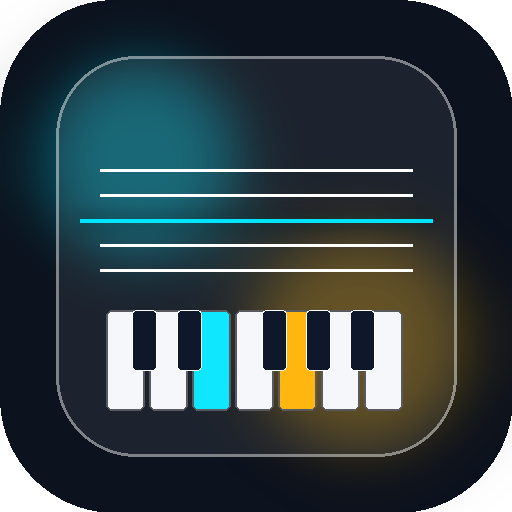

An on-device sheet music scanner and audio player for iOS. Minimal, fast, and open source.
Scan sheet music with your camera or import photos. Parses notation directly on device.
Synthesizes acoustic piano audio in real time with scrub controls and speed adjustment.
Pure iOS design with inset grouped lists, system typography, and zero distractions.
All music recognition and playback run locally on your device without sending data to servers.